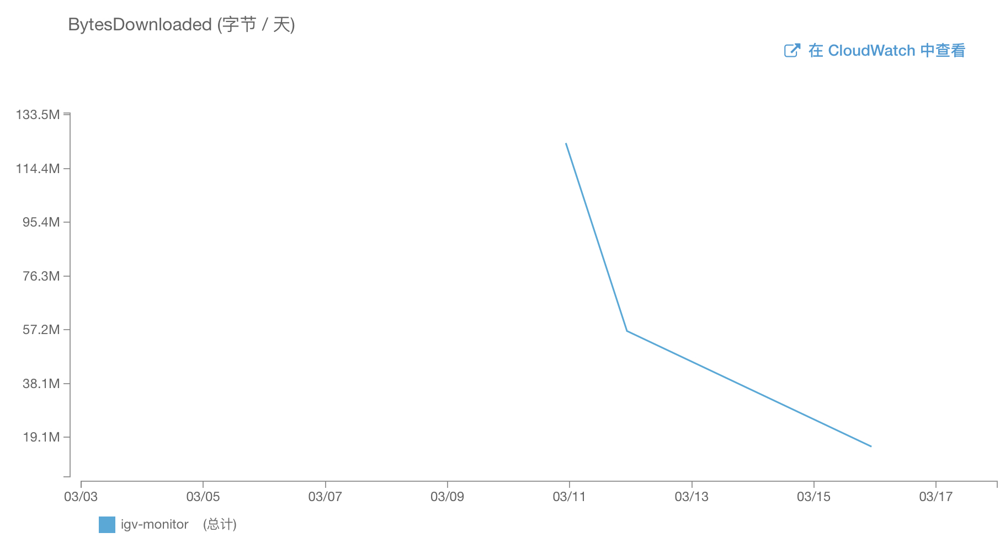
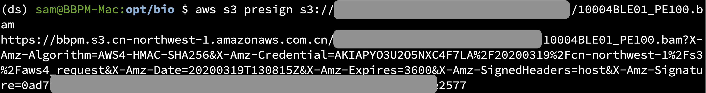

云上浏览BAM文件需要解决的问题
-- Sam
接上
上一批博客BAM文件放云上好了，本地IGV很方便，其中介绍了将NGS数据比对后的BAM文件放到S3上，通过本地IGV工具来查看/确认基因组上变异情况。同时也遗留了三个问题，先重温一下：
这么大的文件从网络上下载，会不会特别慢啊？会不会流量费特别贵啊？
“Make public”，让该文件读取权限暴露在互联网中，任何拥有该权限的人都可以查看，这点肯定不对。
对于FQ、BAM、VCF等不同类型文件的存储方案是什么？都放在标准存储中吗？
接下来，通过此篇博文逐一进行解释。注意，本文仅代表我个人观点，且不对此负责及做任何承诺。
BAM文件下载流量问题
按常理想，如果每查看一个BAM文件都需要将全部整个文件下载到本地，恐怕是难以接受的，一方面会造成严重的资源浪费，并且也会耗费大量加载的时间。这就是当初给BAM设计index文件（BAI文件）的好处之一了。
-
首先我们在比对流程中一般会包含一步
samtools index *.bam的分析流程，就是将BAM文件中的比对信息进行排序，一般而言，是根据比对到基因组上的位置进行排序的，这有利于根据基因组位置快速找到相关的测序序列。 -
BAI文件本身是给BAM文件做索引的，索引这个技术的使用也是为了快速搜索。其中一个很关键的使用场景是通过基因组位置快速定位对应BAM的位置（文件存储的字节信息）。
我们看一下IGV官方文档对于通过HTTP地址访问BAM文件的描述：

请注意最后一句，该文档已经暗示了通过IGV查看变异位点会根据基因组位置下载BAM文件固定区域数据并展示在IGV软件中。
近几天我对几个样本的BAM进行非定量的数据测试，通过对S3上BAM文件的访问及数据下载量分析，也可以一窥大概，见下图：

其中3/11当天，我连续做了4～6个BAM文件的共计12个位点，并且在不同时间分别打开过。100MB的数据下载量，根据AWS中国区目前的流量价格，大约1毛钱，还是可以接受的。
公共文件的权限问题
通过AWS的CLI工具预设定相应文件的URL访问，如下图：

该地址默认有效周期为1小时，通过设定--expires-in参数确保该URL访问周期，最小1秒，最大604800秒（1周）。BAM和BAI文件都通过以上方式预设定URL地址后，就可以通过IGV软件进行浏览查看了。
FQ/BAM/VCF文件的文件存储方案建议
FQ、BAM和VCF是NGS检测分析的常见文件格式，按照目前我设置的自动周期管理列在下表中。
| 文件格式 | 标准存储 | 非频繁访问 | 归档存储 | 删除 |
|---|---|---|---|---|
| FQ | 前1个月 | - | 保持3个月 | 永久删除 |
| BAM | 前1个月 | 保持3个月 | 永久归档 | - |
| VCF | 前1个月 | 保持3个月 | 永久归档 | - |